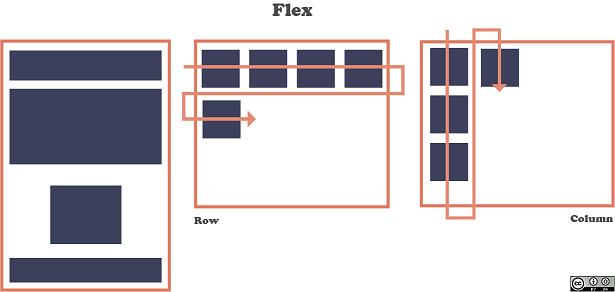
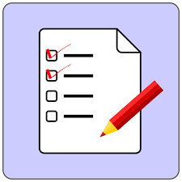

Flex Box

Antiguamente la alineación de los elementos se diseñaba utilizando propiedades flotantes que dificultaban el posicionado de los elementos. Para solucionar y ayudar a distribuir los elementos se diseñó
este modelo unidimensional que, a excepción de las propiedades flotantes que permiten posicionar
horizontalmente elementos, este modelo otorga un control total del elemento, esto es de dirección,
alineación, orden y tamaño.
El funcionamiento del modelo parte de un contenedor padre que se llama flex-container que puede
tener la propiedad display:flex o display:flex-inline. De esta manera, el contenedor se convierte en un
contenedor flexible y los elementos que tienen se convierten en flexibles, es decir, que se adapten al
espacio disponible.
Como se puede observar en la figura 29, el modelo de caja flexible es compatible con bastantes navegadores exceptuando antiguas versiones de Internet Explorer que no es del todo compatible y para mantener
la compatibilidad es necesario añadir prefijos a las propiedades flex.
Espinosa Sánchez, A. (2018). Diseño e implementación de una red social en tiempo real basada en el diseño centrado en el usuario.
Listas y enlaces

Las listas permiten organizar la información de una manera lógica, lo que
facilita su legibilidad. Existen cinco tipos de listas en HTML: listas de de-
denición, listas ordenadas, listas no ordenadas, listas de directorio y listas de
menú. Como las dos últimas listas están obsoletas, ya que se visualizan como
las listas no ordenadas, no las vamos a ver.
Las listas se pueden anidar entre sí, incluso si son de distinto tipo. En el
caso de anidar listas no numeradas, cada nivel de anidamiento tendrá un tipo
de símbolo distinto.
Listas de definición
Una lista de definición se emplea para mostrar términos con sus correspondientes de�niciones, como si se tratase de un glosario o diccionario.
Una lista de definición se crea con la etiqueta - DL
Listas ordenadas
En las listas ordenadas o numeradas, cada elemento aparece numerado.
La etiqueta - OL, Cada elemento se define con la etiqueta - LI
Listas no ordenadas
En las listas no ordenadas, los elementos aparecen marcados mediante unos
pequeños elementos gráficos, llamados en inglés bullet. La etiqueta - UL define una lista no ordenada. Cada elemento se define
con la etiqueta - LI
Llibre Giralt, M. (2016). Introducción al HTML y al CSS, septiembre 2011.